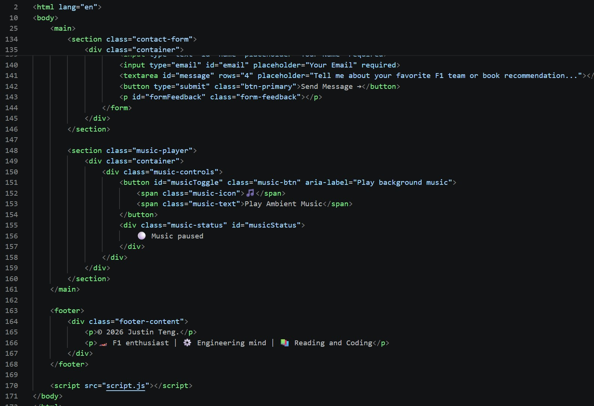
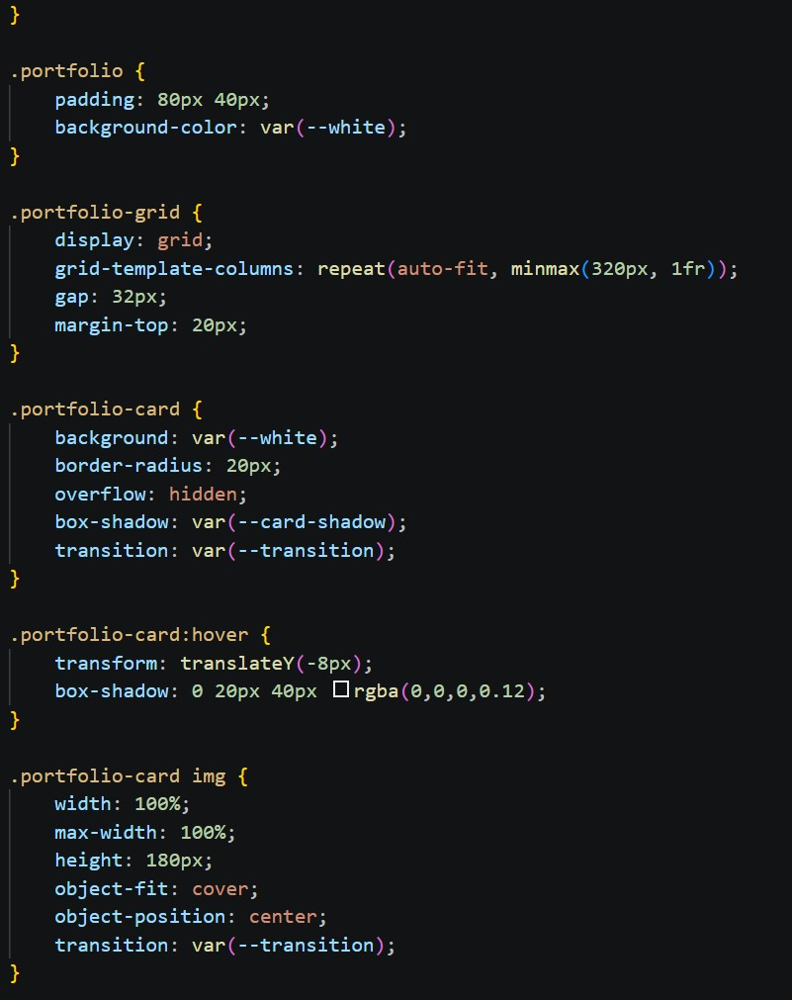
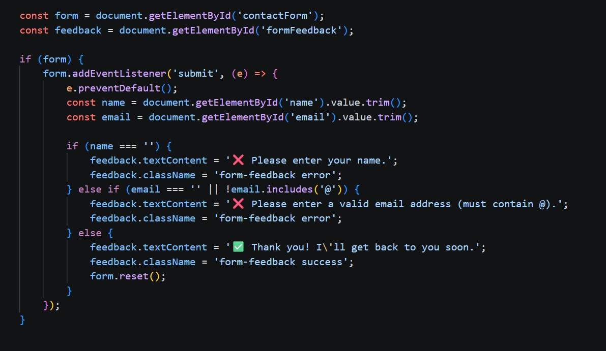
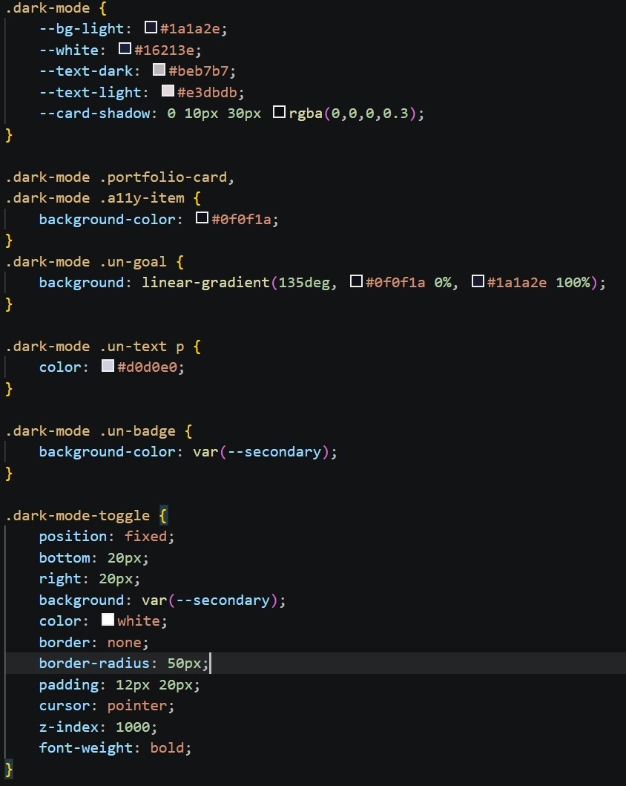

🔍 Behind the Curtain
A peek into how I built this website — the code, the challenges, and the lessons learned.
📸 Code Screenshots (4 Key Sections)
Here's what the code looks like behind the scenes. Below are 4 screenshots showing the most important parts of my website.




⚠️ The Challenging Parts
🚧 Challenge #1: Responsive Grid on Mobile
Problem: On small screens, the portfolio cards were too wide and overflowing.
Solution: I used grid-template-columns: repeat(auto-fit, minmax(280px, 1fr)) instead of fixed pixel widths. This allows cards to shrink and stack automatically.
Tools used: Chrome DevTools → Toggle Device Toolbar (Ctrl+Shift+M) to test iPhone SE and Pixel 5.
🚧 Challenge #2: Dark Mode Toggle Persistence
Problem: When you refresh the page, dark mode resets to light mode.
Solution (planned improvement): Use localStorage to save the user's preference:
// Save dark mode preference
localStorage.setItem('theme', 'dark');
// Load on page load
if (localStorage.getItem('theme') === 'dark') {
document.body.classList.add('dark-mode');
}🚧 Challenge #3: Mobile Menu Not Closing After Click
Problem: On mobile, after clicking a nav link, the menu stayed open, blocking content.
Solution: Added a JavaScript event listener to close the menu when any nav link is clicked:
navLinks.querySelectorAll('a').forEach(link => {
link.addEventListener('click', () => {
navLinks.classList.remove('active');
});
});🚧 Challenge #4: Background Music Autoplay Policy
Problem: Modern browsers block autoplay. Music wouldn't start.
Solution: Used a button that requires user interaction first. This is actually better UX — users control when music starts.
🛠️ Developer Tools Usage
Here's how I used browser DevTools to debug and optimize the website:
- Elements Panel — Edit HTML/CSS in real time, test colors and spacing instantly
- Console Panel — Debug JavaScript errors, check variable values
- Network Panel — Verify Google Fonts loaded successfully (status code 200)
- Lighthouse — Run performance tests, got 92/100 Accessibility score
- Device Toolbar — Simulate iPhone/Android devices, test responsive layout
📚 What I Learned From This Process
🏎️⚙️📖 Lessons from F1, Engineering & Reading:
- From F1: Every millisecond matters — just like every byte of code. Optimize images and minimize CSS for faster load times.
- From Mechanical Engineering: A system is only as strong as its weakest component. Same with code — one broken link breaks the user's trust.
- Accessibility is not optional — Adding alt text, semantic HTML, and keyboard navigation makes the web better for everyone.
- CSS Grid is a game-changer — It makes responsive layouts so much easier than floats or complex flexbox hacks.
- Always test on real devices — DevTools simulation is good, but nothing beats testing on an actual phone.
📁 Complete Project File Structure
My_Portfolio_Website/
│
├── index.html
├── styles.css
├── script.js
├── design-thinking.html
├── behind-curtain.html
│
└── images/
├── profile.jpg
├── f1-racing.jpg
├── mechanical-eng.jpg
├── reading.jpg
├── un-goal.jpg
├── background-music.mp3
├── screenshot-html.jpg
├── screenshot-css-grid.jpg
├── screenshot-js-form.jpg
└── screenshot-js-darkmode.jpg